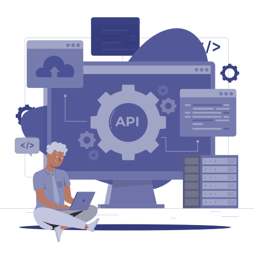
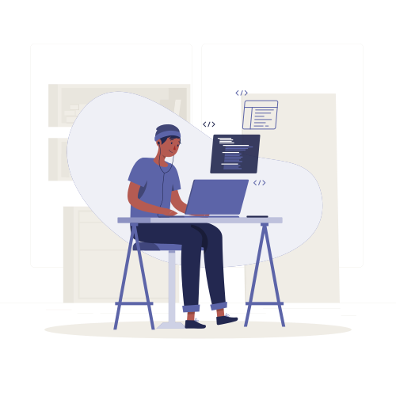

Individualsoftware, die zu Ihren Prozessen und Systemen passt.
Wir entwickeln Fachanwendungen, Kundenportale, digitale Plattformen und Commerce-Lösungen mit sauberer Integration in Ihre bestehende IT. Cloud, eigenes Rechenzentrum und hybride Betriebsmodelle sind gleichermaßen möglich.
Was wir tun
Wir haben kundenorientierte Plattformen in nationalem Maßstab gebaut: B2C- und B2B-Self-Service-Portale für Abrechnung, Zahlung und Tarifbuchung für Millionen von Teilnehmern, ein Headless-E-Commerce-Backend für Web- und Mobile-Frontends, öffentliche Lizenz-E-Services für ein Ministerium sowie interne Benefit- und Gutscheinplattformen.
Gemeinsam ist diesen Projekten: kritische Prozesse, sauber gebaut, in einer Größenordnung und Verfügbarkeit, in der ein Ausfall für den gesamten Markt sichtbar ist.
Unsere Entwickler arbeiten KI-gestützt und folgen Marktstandards als Basis: saubere Architektur, API-First-Design, automatisierte Tests, CI/CD, sichere Programmierung, Observability und Dokumentation, die mit dem Code umgesetzt wird.
Microsoft-Technologien sind ein wesentlicher Teil unserer Engineering-Kompetenz. Wir arbeiten ebenso mit Angular, React, Flutter, Python und Rust und deployen auf Kubernetes und OpenShift, wo die Plattform es erfordert.
Eingesetzte Technologien
KI-gestützt. Nach Marktstandards gebaut.
Unsere Entwickler arbeiten standardmäßig mit KI-Unterstützung, Codegenerierung und -review, Test-Scaffolding, Refactoring, Dokumentation. Das Ergebnis: mehr umgesetzte Funktionalität pro Sprint und mehr Aufmerksamkeit des Teams für Architektur und Geschäftslogik.
Jede Umsetzung folgt Marktstandards als Basis: saubere Architektur und Trennung der Verantwortlichkeiten, API-First-Design, automatisierte Tests, CI/CD-Pipelines, Infrastructure as Code, sichere Programmierung und Identitätsintegration, Observability sowie Dokumentation, die begleitend zum Code entsteht statt danach.

KI-gestützte Umsetzung
Generierung, Review und Refactoring über den gesamten Stack, mit durchgängiger menschlicher Architekturverantwortung.
Qualität eingebaut
Automatisiertes Test-Scaffolding und Coverage-Analyse ab dem ersten Sprint, nicht erst vor dem Go-Live.
KI im Produkt
Dort, wo sie ihren Platz verdient: Suche, Klassifikation, Assistenten, Empfehlungen, Dokumentenverständnis.
Nutzbare Übergabe
Architekturdokumentation, Runbooks und Deployment-Leitfäden, während der Umsetzung erstellt.
Unser Vorgehen

- 01Rahmen
Geschäftsproblem, Rahmenbedingungen, Erfolgskriterien
- 02Entwerfen
Prozessdesign, Architektur, UX
- 03Bauen
KI-gestützte Sprints mit Kunden-Reviews
- 04Integrieren
APIs, Identität, Abrechnung und Bestandssysteme
- 05Bereitstellen
Cloud, on-premises oder hybrid; CI/CD und Runbooks
Typische Einsatzbereiche
Digital Commerce & Self-Service
Headless-Commerce-Backends, B2C- und B2B-Storefronts, Teilnehmer-Self-Service, Tarifkataloge, Rechnungseinsicht und Online-Zahlungsstrecken.
Öffentliche E-Services & Portale
Dienste für Bürger und Fachleute: Lizenzierung, Genehmigungen und Antragsbearbeitung, mit Backend, Integration und Dokumentation.
Interne Geschäftsplattformen
Benefit- und Gutscheinplattformen, Planung und Verfolgung von Inspektionseinsätzen, Reklamationsmanagement und Asset-Management-Anwendungen.
Wenn Sie die Anwendung beschreiben können, können wir sie bauen.
Ein Individualprojekt. Eine Startup-App. Ein internes Werkzeug, das niemand von der Stange verkauft. Eine öffentliche Plattform, die realem Traffic standhalten muss. Welche Integration auch immer, ERP, Abrechnung, CRM, Zahlungsanbieter, Identitätssysteme, Altdatenbanken, und wo immer sie laufen muss: Cloud, on-premises oder hybrid. Wir setzen sie nach Marktstandards um.
Jede Zielgruppe
Öffentliche Plattformen, Kundenportale, Partner-Extranets, interne Fachanwendungen, mobile Apps, Startup-Produkte.
Jede Integration
ERP, CRM, Abrechnung, Payment-Gateways, Identity Provider, API-Gateways, Altsysteme, Drittanbieterdienste.
Jede Umgebung
Azure und Public Cloud, Ihr eigenes Rechenzentrum, Kubernetes- oder OpenShift-Cluster oder eine hybride Kombination.
Bringen Sie uns die Idee in jedem Stadium, ein geschriebenes Lastenheft, einen Wettbewerber, den Sie übertreffen wollen, oder ein im Gespräch beschriebenes Problem. Wir sagen Ihnen, ob sie individuell gebaut, auf einer bestehenden Plattform konfiguriert oder gar nicht gebaut werden sollte.
Erzählen Sie uns von Ihrem ProjektDie öffentlichen digitalen Kanäle eines nationalen Anbieters
Für den etablierten Telekommunikationsanbieter seines Marktes haben wir die öffentlichen B2C- und B2B-Serviceplattformen gebaut und betreuen sie, Tarifbuchung, Rechnungsstellung, Online-Zahlung und Self-Service, zusammen mit der Corporate-Content-Website und einem neuen Headless-E-Commerce-Backend auf OpenShift.
Oder alle Referenzen in diesem Bereich ansehen.
Erzählen Sie uns von Ihrem Projekt
Ein fachliches Gespräch mit einem Architekten.
Erzählen Sie uns von Ihrem ProjektHäufig gestellte Fragen

Nein. Wir arbeiten an Erstversionen ebenso wie an nationalen Plattformen. Entscheidend ist, dass das Problem klar genug ist, um es zu umreißen. Für frühe Produkte empfehlen wir meist einen eng geschnittenen MVP mit einer definierten Architektur, die beim Skalieren nicht weggeworfen werden muss.
Ja. Integration ist der größte Teil unserer Arbeit: ERP, CRM, Abrechnungsplattformen, Zahlungsanbieter, Identitätssysteme, API-Gateways und Altdatenbanken. Wir binden an das Bestehende an, statt dessen Ersatz vorauszusetzen.
Ja. Wir liefern nach Azure und Public Cloud, in Ihr eigenes Rechenzentrum, auf Kubernetes- oder OpenShift-Cluster und in hybride Konfigurationen. Die Architektur richtet sich nach Ihrer Rahmenbedingung, nicht nach unserer Vorliebe.
Ja, unsere Entwickler arbeiten standardmäßig KI-gestützt, wodurch wir pro Sprint mehr liefern. Architekturentscheidungen, Code-Review und Verantwortung bleiben menschlich. Unabhängig davon können wir KI-Fähigkeiten in das Produkt selbst einbauen, wo sie realen Mehrwert schaffen.